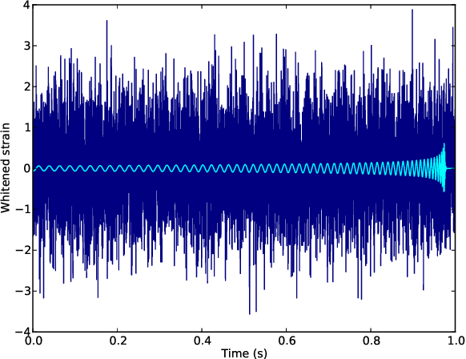
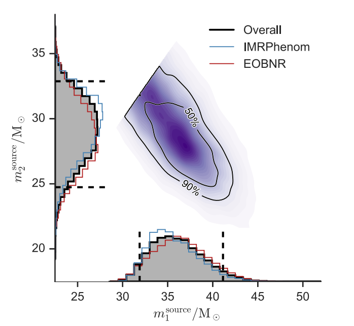

Why is GW hard?
Multimodality

https://gracedb.ligo.org/superevents/S230601bf/view/
Small posterior (sometime)
Phys.Rev.X 9 (2019) 1, 011001
Data
Source properties
This is a million dollar problem!
Multimodality
https://gracedb.ligo.org/superevents/S230601bf/view/
Small posterior (sometime)
Phys.Rev.X 9 (2019) 1, 011001
Can you trust deep learning for scientific inference? And what can you do when results are inaccurate? We address these questions for ML-based inference of complex gravitational wave models and get highly accurate and reliable results. https://t.co/MLC4HDAv1q 1/12 pic.twitter.com/sK6vJhvWjh
— Max Dax (@maximilian_dax) November 3, 2022
If you believe us, then most of the bbhs are from cluster!(I don't)
Fixed model, changing data -> Good
Fixed data, change model -> Bad